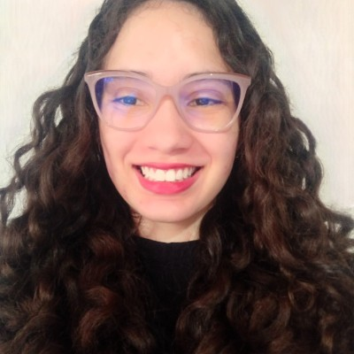
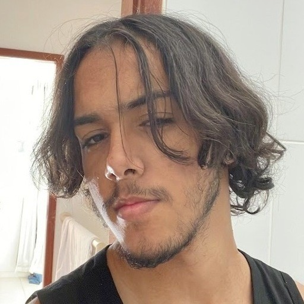
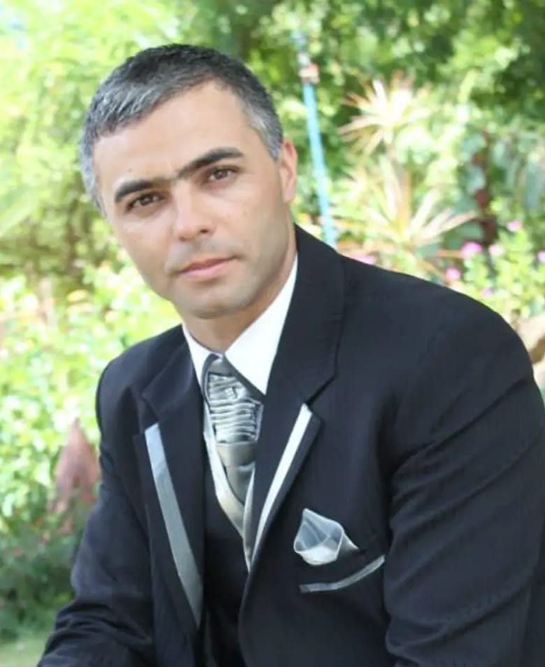
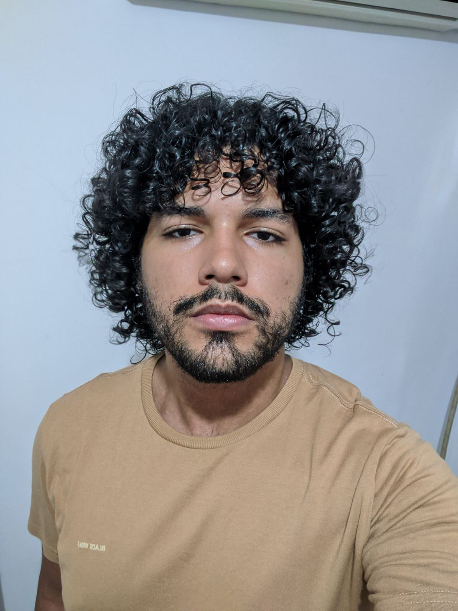
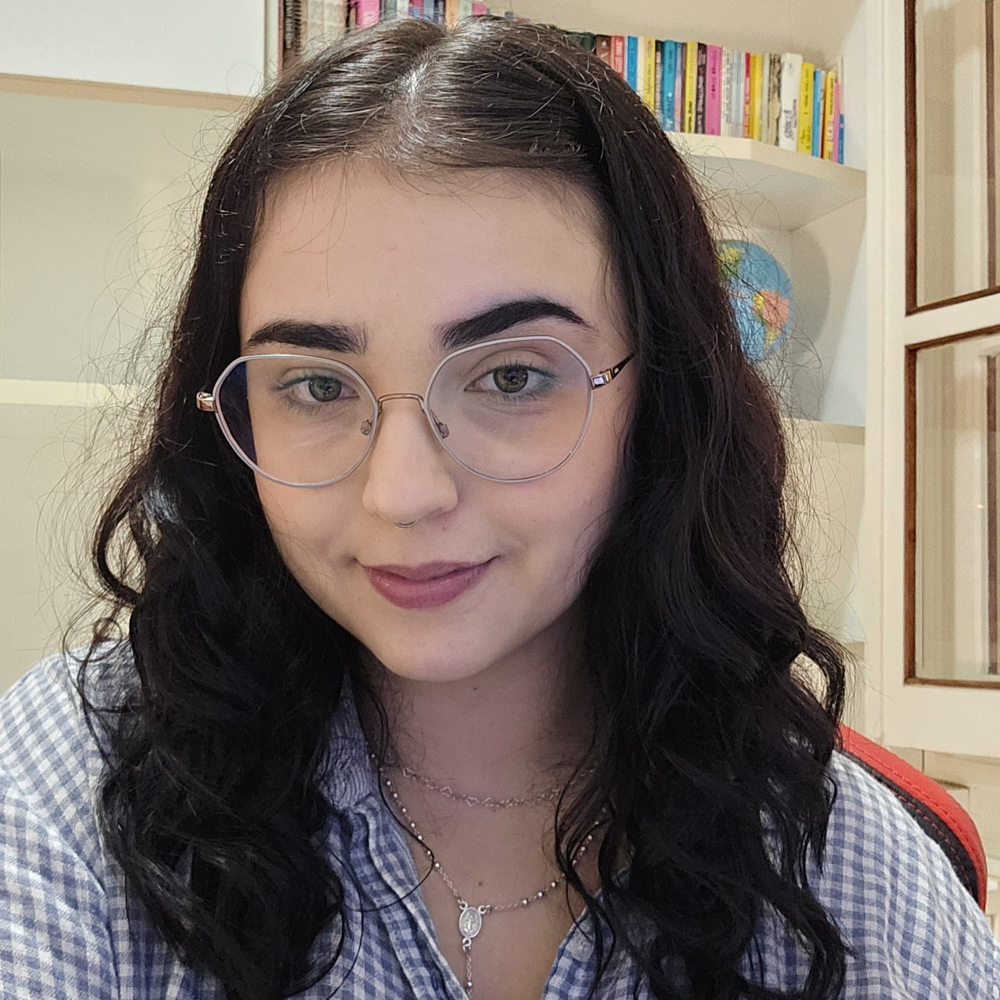

Sobre nós
Devido ao aumento expressivo de casos de dengue no Brasil em 2024 e a
situação de emergência em saúde pública em Minas Gerais,
Dengue Status
surgiu como uma iniciativa de fornecer uma ferramenta web de livre
acesso para que os cidadãos possuam um meio rápido e prático às
informações sobre a doença. Além disso, a população de Minas Gerais
pode colaborar ativamente com a atualização de dados sobre seu caso e
foco de dengue.
Dengue Status foi desenvolvida por alunos do 1° período de Sistemas
de Informação da PUC Minas, sob orientação do Professor Hugo Bastos
de Paula.

Ádria Tavares Leite Silva
Desenvolvedora de software com 2 anos de experiência profissional no
desenvolvimento de aplicações Web. Sou apaixonada por programação e
gosto de ganhar experiência por meio de projetos que usem diferentes
tecnologias.

Arthur Ribeiro Dias Guimarães
Sou desenvolvedor Full Stack apaixonado por transformar ideias em
código com qualidade e eficiência, há 4 anos me reinventando,
desafiando e capacitando no mundo da tecnologia.
Daniel Caruso de Sá Teixeira
Desenvolvedor Android, pronto para enfrentar desafios, com a mente
aberta para absorver conhecimento e crescer como desenvolvedor.

Dionatas Maria de Jesus
Bacharel em Ciências Contábeis, Pós Graduado em Gestão Social e
Financeira de Entidades Públicas, Privadas e do Terceiro Setor,
embarcando no mundo de Sistemas de Informação por entender o papel
fundamental da Tecnologia na transformação da sociedade,
aperfeiçoando e criando oportunidades!

Jhonata Augusto
Técnico em informática, autodidata desde os 13 anos, ex-competidor
de robótica e pesquisador. Vivência em equipes de desenvolvimento
ágil e no desenvolvimento de sistemas front e back-end, com
interesse em DevOps.

Maria Laura Cardoso Bastos
Sempre fui apaixonada por tecnologia, desde criança. Durante a faculdade
de engenharia, tive meu primeiro contato com programação nas aulas de
robótica — e foi aí que descobri um novo universo, que me fez querer
mudar de rota e seguir de vez na área.